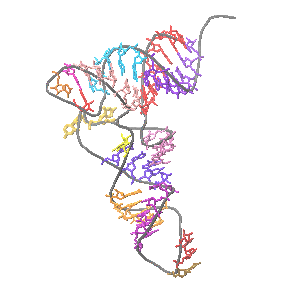

tRNA search in progress.

(Total length of sequence(s) = 13339
bp)
Please note that no hmm-filter searches are very slow.
Accordingly, please limit the size of sequences submitted using these search modes,
or download the UNIX source and run the program locally...
Please Wait...
Search Completed
tRNAscan-SE v. 2.0
Please cite:
- Lowe, T.M. and Chan, P.P. (2016) tRNAscan-SE On-line: Search and
Contextual Analysis of Transfer RNA Genes. Nucl. Acids Res. 44: W54-57.
- Chan, P.P., Lin, B., and Lowe, T.M. tRNAscan-SE 2.0. (In Preparation)
tRNA secondary structures rendered by NAVIEW (c) 1988 Robert E. Bruccoleri.
Results
No tRNAs found
Run Statistics:
| Search options |
|---|
| Search Mode | Organellar |
| Searching with | Infernal single-pass scan |
| Maximum sensitivity mode |
| Covariance model | models/TRNAinf-1415.cm |
| tRNA covariance model search |
| cutoff score | 15 |
| Pseudogene checking disabled |
| Infernal Stats |
|---|
| Sequences read | 1
|
| Infernal-confirmed tRNAs | 0
|
| Bases scanned by Infernal | 13339
|
| % seq scanned by Infernal | 100.0 %
|
| Script CPU time | 0.00 s
|
| Infernal CPU time | 8.53 s
|
| Scan speed | 1563.8 bp/sec
|
| Processing time |
|---|
| Started | Wed Apr 10 17:49:47 PDT 2019 |
| Infernal analysis of tRNAs ended | Wed Apr 10 17:49:55 PDT 2019 |
| Overall scan speed | 1563.8 bp/sec |
| Predicted tRNA genes |
|---|
| tRNAs decoding Standard 20 AA | 0 |
| Selenocysteine tRNAs (TCA) | 0 |
| Possible suppressor tRNAs (CTA,TTA,TCA) | 0 |
| tRNAs with undetermined/unknown isotypes | 0 |
| Predicted pseudogenes | 0 |
| Total tRNAs | 0 |
| Isotype / Anticodon Counts: |
|---|
| Ala: 0 | AGC: 0 | GGC: 0 | CGC: 0 | TGC: 0 | | |
| Gly: 0 | ACC: 0 | GCC: 0 | CCC: 0 | TCC: 0 | | |
| Pro: 0 | AGG: 0 | GGG: 0 | CGG: 0 | TGG: 0 | | |
| Thr: 0 | AGT: 0 | GGT: 0 | CGT: 0 | TGT: 0 | | |
| Val: 0 | AAC: 0 | GAC: 0 | CAC: 0 | TAC: 0 | | |
| Ser: 0 | AGA: 0 | GGA: 0 | CGA: 0 | TGA: 0 | ACT: 0 | GCT: 0 |
| Arg: 0 | ACG: 0 | GCG: 0 | CCG: 0 | TCG: 0 | CCT: 0 | TCT: 0 |
| Leu: 0 | AAG: 0 | GAG: 0 | CAG: 0 | TAG: 0 | CAA: 0 | TAA: 0 |
| Phe: 0 | AAA: 0 | GAA: 0 | | | | |
| Asn: 0 | ATT: 0 | GTT: 0 | | | | |
| Lys: 0 | | | CTT: 0 | TTT: 0 | | |
| Asp: 0 | ATC: 0 | GTC: 0 | | | | |
| Glu: 0 | | | CTC: 0 | TTC: 0 | | |
| His: 0 | ATG: 0 | GTG: 0 | | | | |
| Gln: 0 | | | CTG: 0 | TTG: 0 | | |
| Ile: 0 | AAT: 0 | GAT: 0 | CAT: 0 | TAT: 0 | | |
| Met: 0 | | | CAT: 0 | | | |
| Tyr: 0 | ATA: 0 | GTA: 0 | | | | |
| Supres: 0 | | CTA: 0 | TTA: 0 | TCA: 0 | | |
| Cys: 0 | ACA: 0 | GCA: 0 | | | | |
| Trp: 0 | | | CCA: 0 | | | |
| SelCys: 0 | | | | TCA: 0 | | |
tRNAscan-SE command used in this prediction run:
tRNAscan-SE -qQ --detail -o# -m# -f# -l# -c tRNAscan-SE.conf --max -O (fasta file)